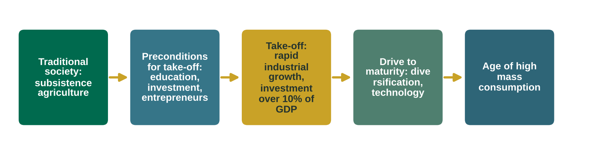
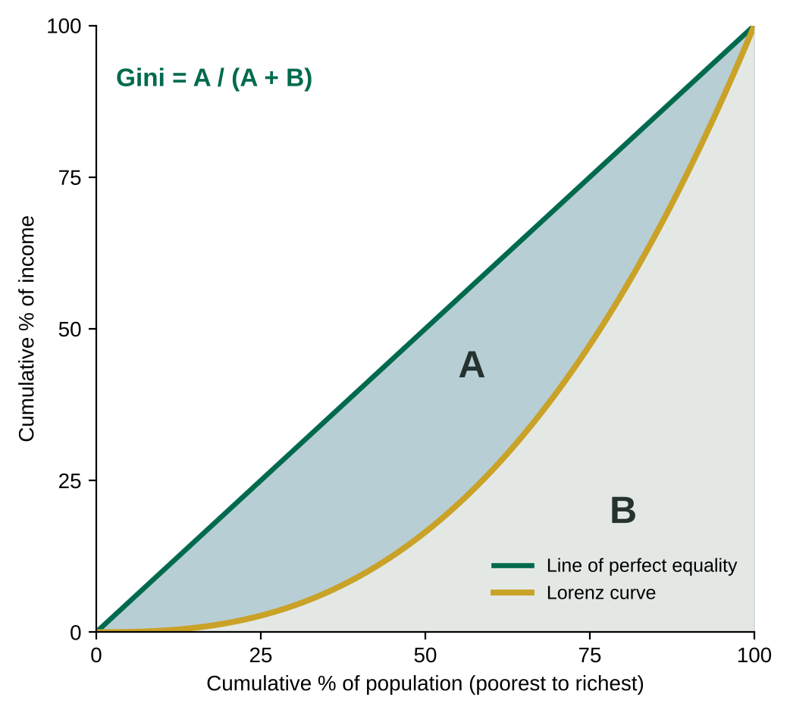
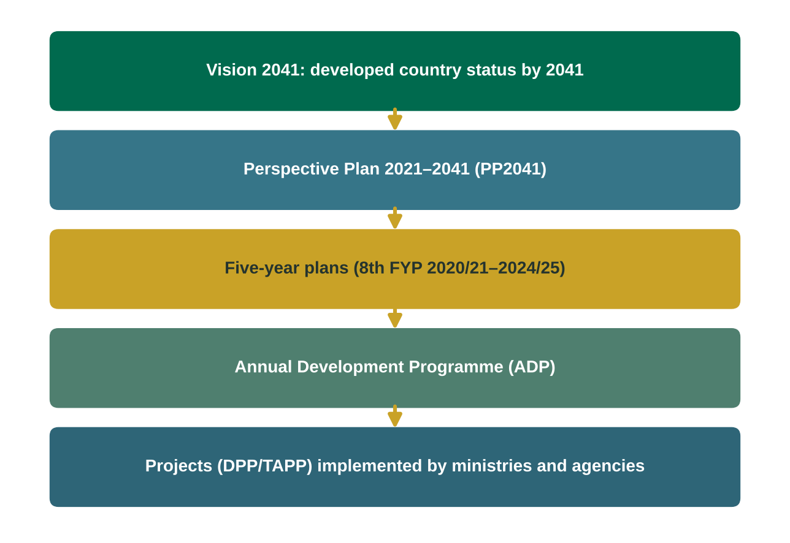
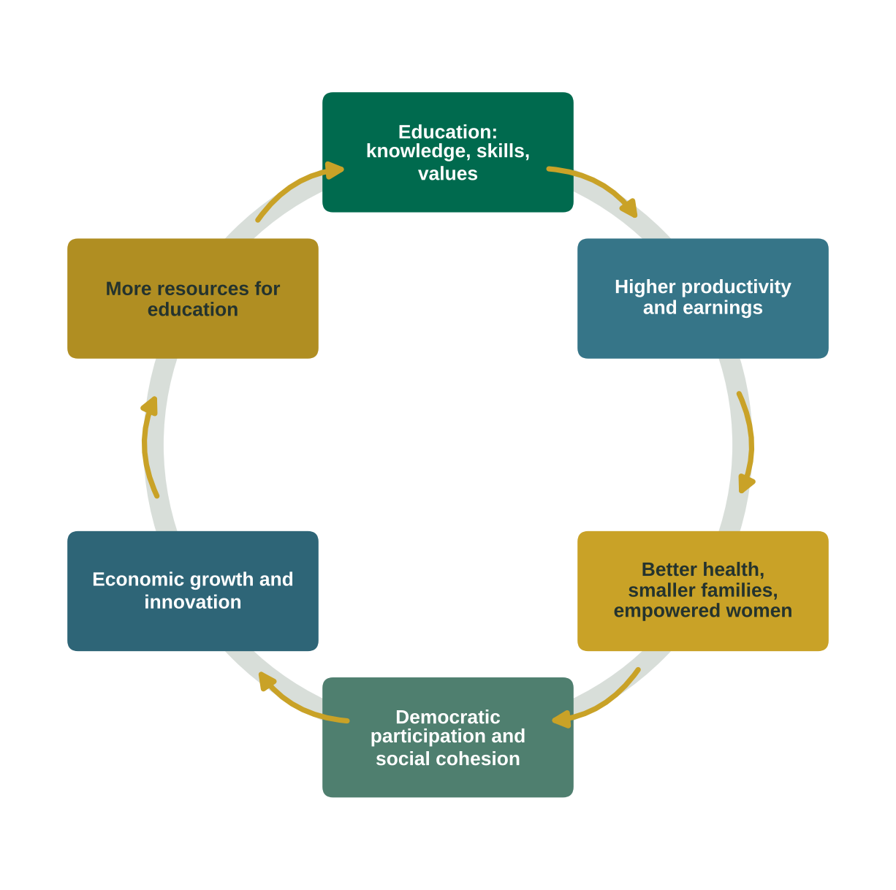

PC 119 Education and Development
Development theories and indicators, human development, Bangladesh's planning machinery and the role of education
Contents
About this course
What is development, how is it measured, and what does education contribute to it? This course moves from classical theories of development (Rostow, structural change, Marxist, dependency, modernisation and human capital) to the human development and sustainable development paradigms; explains economic and social indicators including GDP, GNI, the Gini coefficient and the Human Development Index; describes Bangladesh's planning machinery (Planning Commission, NEC, ECNEC, perspective and five-year plans, Vision 2041) and its education development projects; and analyses the role of formal, non-formal, technical and emergency education, and of women's education, in national development.
Course objectives
Explain the concepts, dimensions, theories and contemporary issues of development, including the SDGs.
Interpret economic and social indicators of development and the Human Development Index.
Distinguish human resource development from human development.
Describe Bangladesh's development planning process and education projects, and analyse the role of education in development.
Each unit follows the official syllabus order. Read the narrative first, then the Key point boxes, then test yourself with the Exam focus questions.
Golden boxes = must-remember ideas. Teal boxes = definitions and study tips. Green boxes = Bangladesh context.
The final chapter is a question bank (MCQs with answers, short and broad questions) in the style of university examinations, followed by full references in APA 7th style.
Statistics on enrolment, budgets and policies change every year. Before an exam, check the latest BANBEIS, DPE, UGC and UNESCO figures.
Unit 1: Concepts, Theories and Issues of Development
Chapter summary
Development is a multidimensional process of improving people's lives: raising incomes and productivity, but also expanding health, knowledge, freedom, dignity, equity and environmental sustainability. Todaro and Smith (2020) identify three core values of development: sustenance (meeting basic needs), self-esteem (being a person, not a tool of others) and freedom from servitude (being able to choose).
This chapter covers: Meaning, concept and dimensions of development; Terminology in development; Underdeveloped, developing and developed countries; Theories of development; Recent trends: human development and sustainable development; Issues in development; Development as a whole and truncated development; The SDGs as targets for development.
What the curriculum saysUnit 1: Concepts, Theories and Issues of Development · 10 contact hours
At the end of this unit learners will be able to
- explain different concepts and dimensions of development
- describe various ideas and theories of development
- explore various ideas and theories of development
- analyze different aspects of development
- Meaning, concepts and dimensions of development
- Terminologies in Development
- Different ideas of development: Concepts of underdeveloped, developing and developed
- Theories of development: W.W. Rostow’s Stages of Economic Growth, Structural Change Model, Marxist view, Dependency Theory of Development, Modernization Theory and Human
- Recent trends in development: Human development theory and Sustainable development
- Issues in development (individuals, classes, gender, ethnic groups etc.)
- Development as a whole and Truncated Development
- SDG as a target for the development
1.1 Meaning, concept and dimensions of development
Development is a multidimensional process of improving people's lives: raising incomes and productivity, but also expanding health, knowledge, freedom, dignity, equity and environmental sustainability. Todaro and Smith (2020) identify three core values of development: sustenance (meeting basic needs), self-esteem (being a person, not a tool of others) and freedom from servitude (being able to choose). Amartya Sen (1999) defines development as "a process of expanding the real freedoms that people enjoy" (Development as Freedom).

Figure 1. Dimensions of development
1.2 Terminology in development
| Term | Meaning |
|---|---|
| Economic growth | Increase in the production of goods and services (GDP), a quantitative change |
| Economic development | Growth plus structural change and improved living standards, a qualitative change |
| Underdevelopment | A condition of low income, low productivity, poverty, dependence and weak institutions |
| Modernisation | Transformation from traditional to modern (industrial, urban, rational) societies |
| Sustainable development | "Development that meets the needs of the present without compromising the ability of future generations to meet their own needs" (Brundtland Commission, WCED, 1987) |
| Human development | Expanding people's choices and capabilities (UNDP, 1990) |
| Inclusive growth | Growth that benefits all groups and reduces inequality |
| Poverty line | Minimum income for basic needs; the World Bank international line is US$2.15 per day (2017 PPP), revised in 2025 to US$3.00 (2021 PPP) |
| LDC graduation | Bangladesh met all three UN criteria (per-capita income, Human Assets Index, Economic Vulnerability Index) in 2018 and 2021, and was recommended to graduate from Least Developed Country status in 2026 |
1.3 Underdeveloped, developing and developed countries
The World Bank classifies economies by GNI per capita (Atlas method) into low-income, lower-middle-income, upper-middle-income and high-income countries; the thresholds are revised each 1 July. Bangladesh became a lower-middle-income country in 2015. The UN uses "developed", "developing" and "least developed" categories. Terms such as "Third World" and "Global South" are also used, with debate about their accuracy. Characteristics often attributed to developing countries: low per-capita income, high dependence on agriculture, rapid population growth, high unemployment and underemployment, dualism (modern and traditional sectors), dependence on primary exports and weak institutions.
1.4 Theories of development
Rostow's stages of economic growth (1960)
W. W. Rostow's The Stages of Economic Growth: A Non-Communist Manifesto proposed five linear stages:

Figure 2. Rostow's five stages of economic growth (1960)
Role of education: builds the preconditions (literacy, scientific attitude, skilled labour). Critique: Eurocentric, assumes all countries follow one path, ignores external constraints and inequality.
Structural change model (Lewis, 1954; Chenery)
Sir Arthur Lewis's two-sector model: surplus labour moves from a low-productivity traditional (agricultural) sector to a high-productivity modern (industrial) sector; reinvested profits drive growth until surplus labour is absorbed (the "Lewis turning point"). Chenery's patterns of development show shifts from agriculture to industry and services. Education's role: skills for the modern sector. Critique: assumes full employment in the modern sector and labour-using investment; urban unemployment is common.
Marxist view
Development is driven by class struggle and changes in the mode of production (primitive communism → slavery → feudalism → capitalism → socialism → communism). Capitalism generates growth but also exploitation and inequality. Education is part of the superstructure that reproduces capitalist relations (Bowles & Gintis) but can also raise class consciousness.
Dependency theory
Developed by Latin American scholars (Raúl Prebisch, André Gunder Frank, Samir Amin, Cardoso and Faletto). Underdevelopment is not an original state but a result of the unequal integration of peripheral (poor) countries into a world economy dominated by the core (rich) countries. Frank's "development of underdevelopment". Wallerstein's world-systems theory adds core, semi-periphery and periphery. Education: colonial and Western-oriented education can create "brain drain" and cultural dependency (Carnoy, 1974, Education as Cultural Imperialism). Policy prescriptions: import substitution, self-reliance, South–South cooperation.
Modernisation theory
Associated with Talcott Parsons, Daniel Lerner, Alex Inkeles and David McClelland (1950s–60s). Development requires transformation from traditional to modern values, institutions and personalities (achievement orientation, rationality, openness to change). Inkeles and Smith's (1974) Becoming Modern found that schooling was the strongest predictor of "modern" attitudes. Critique: ethnocentric; neglects structural and international constraints.
Human capital theory
Theodore Schultz (1961, "Investment in Human Capital") and Gary Becker (1964) argued that education and training are investments that raise productivity and earnings, just like investment in physical capital. Evidence: the rate of return to education (Psacharopoulos & Patrinos, 2018: about 9% per extra year of schooling globally; returns highest at primary and, recently, tertiary levels). Critiques: screening and signalling theory (Spence, 1973: credentials signal ability rather than create it), credentialism (Collins) and neglect of non-economic values.
| Theory | Cause of underdevelopment | Path to development | View of education |
|---|---|---|---|
| Rostow | Traditional economy | Pass through stages, investment | Builds preconditions |
| Structural change | Dual economy | Transfer labour to modern sector | Skills for industry |
| Marxist | Class exploitation | Socialist transformation | Reproduces or challenges class relations |
| Dependency | Exploitation by core countries | Self-reliance, delinking | Can create dependency; needs decolonising |
| Modernisation | Traditional values and institutions | Diffusion of modern values, technology | Creates modern attitudes |
| Human capital | Low skills and knowledge | Invest in people | Productive investment |
1.5 Recent trends: human development and sustainable development
Human development (Mahbub ul Haq; Amartya Sen's capability approach): development is about enlarging people's choices and capabilities (being and doing what they value). UNDP's Human Development Report since 1990.
Sustainable development: balancing economic, social and environmental goals across generations (Brundtland, 1987; Rio Earth Summit 1992; Agenda 2030). The three pillars: economy, society, environment.

Figure 3. The three pillars of sustainable development
1.6 Issues in development
Development benefits are unevenly distributed among individuals, classes (rich and poor), genders (women's unpaid work, wage gaps), ethnic groups (indigenous peoples' land and language rights), regions (urban and rural, east and west) and generations (climate change). These raise questions of equity, participation and justice.
1.7 Development as a whole and truncated development
Development as a whole (holistic, balanced) integrates economic growth with social, political, cultural and environmental progress, so that all groups benefit. Truncated development is partial, lopsided growth in which some sectors or groups advance while others are left behind, for example GDP growth without job creation ("jobless growth"), industrial growth with environmental destruction, or urban prosperity with rural poverty. UNDP's 1996 Human Development Report warned against five types of bad growth: jobless, ruthless (inequality), voiceless (no democracy), rootless (cultural loss) and futureless (environmental damage).
1.8 The SDGs as targets for development
The 17 Sustainable Development Goals (2015–2030), with 169 targets, are the global development agenda. Education is SDG 4, but it also underpins goals on poverty (1), health (3), gender (5), decent work (8), inequality (10) and climate (13).

Figure 4. SDGs most directly supported by education
Unit 2: Indicators of Development
Chapter summary
An indicator is a measurable variable used to track progress towards a goal. Good indicators are valid, reliable, comparable, available and policy-relevant.
This chapter covers: What is an indicator?; Economic indicators; Social indicators of development.
What the curriculum saysUnit 2: Indicators of Development · 5 contact hours
At the end of this unit learners will be able to
- identify indicators of development
- explain the economic and social indicators of development
- Indicators of Development
- Economic Indicators of Development: National Development as Economic Process: GDP, GNP, Per-Capita Income (PI), Income inequality: Gini Coefficient & Gini Index
- Social Indicators of Development: Life expectancy, Knowledge, Quality of life/standard of living
2.1 What is an indicator?
An indicator is a measurable variable used to track progress towards a goal. Good indicators are valid, reliable, comparable, available and policy-relevant.
2.2 Economic indicators
| Indicator | Definition |
|---|---|
| GDP (Gross Domestic Product) | Market value of all final goods and services produced within a country in a year. GDP = C + I + G + (X − M) |
| GNP / GNI (Gross National Product / Income) | GDP plus net factor income from abroad (income earned by nationals abroad minus income of foreigners at home). Remittances make GNI an important measure for Bangladesh |
| Per-capita income | GNI (or GDP) ÷ population; often adjusted for purchasing power parity (PPP) |
| Growth rate | Annual percentage change in real GDP |
Limitations of GDP: ignores distribution, non-market work (household, care), environmental damage, informal sector, quality of life and wellbeing. Hence the search for broader measures (Stiglitz, Sen & Fitoussi, 2009).
Income inequality: Lorenz curve, Gini coefficient and Gini index
The Lorenz curve plots the cumulative share of income against the cumulative share of population. The Gini coefficient = A ÷ (A + B), where A is the area between the line of equality and the Lorenz curve and B is the area under the Lorenz curve. It ranges from 0 (perfect equality) to 1 (perfect inequality); the Gini index is the same value × 100. Bangladesh's income Gini has been around 0.48–0.50 in recent Household Income and Expenditure Surveys (HIES), indicating rising inequality.

Figure 5. The Lorenz curve and the Gini coefficient: the further the curve bows from the line of equality, the higher the inequality
2.3 Social indicators of development
Life expectancy at birth: a summary of health conditions.
Knowledge: adult literacy rate, mean years of schooling, expected years of schooling, enrolment ratios, learning outcomes.
Quality of life / standard of living: infant and maternal mortality, nutrition, access to safe water and sanitation, housing, electricity, poverty headcount.
Composite indices: HDI, the Gender Development Index (GDI), the Gender Inequality Index (GII), the Multidimensional Poverty Index (MPI; Alkire & Foster), the Physical Quality of Life Index (PQLI; Morris, 1979: literacy, life expectancy and infant mortality).
Unit 3: Human Resource Development and Human Development
Chapter summary
HRD is the process of increasing the knowledge, skills and capacities of people so that they become productive resources for the economy. Harbison and Myers (1964) defined it as "the process of increasing the knowledge, the skills, and the capacities of all the people in a society."
This chapter covers: Human resource development (HRD); Human development (HD); Human Development Index (HDI).
What the curriculum saysUnit 3: Human Resource Development & Human Development · 6 contact hours
At the end of this unit learners will be able to
- explain the concepts of human development in global and Asian contexts
- identify the components of the HD Index
- distinguish the differences among Population, Human Resource & Human Capital
- Concepts and meanings
- Population, Human Resource & Human Capital
- Origin of the concept and its relation to other concepts and strategies of development
- Various aspects and factors of HD
- Indicators and Index (HDI)
- Profile of development and HD (Very high, high, medium and low index countries with particular reference to Asian region)
3.1 Human resource development (HRD)
HRD is the process of increasing the knowledge, skills and capacities of people so that they become productive resources for the economy. Harbison and Myers (1964) defined it as "the process of increasing the knowledge, the skills, and the capacities of all the people in a society."
Population is the total number of people.
Human resources are the population's productive potential (the working-age and skilled population).
Human capital is the stock of knowledge, skills, health and experience embodied in people that generates economic value (Schultz, Becker). Population becomes human capital through investment in education, health and training. The World Bank's Human Capital Index (2018) measures the expected productivity of a child born today; Bangladesh's HCI was about 0.46 in 2020, meaning a child would be 46% as productive as with complete education and full health.
3.2 Human development (HD)
Origin
Pakistani economist Mahbub ul Haq (1934–1998) led the first UNDP Human Development Report in 1990, drawing on Amartya Sen's capability approach. HD was defined as "a process of enlarging people's choices". The three essential choices are to lead a long and healthy life, to acquire knowledge and to have access to resources for a decent standard of living.
Relation to other concepts
| Basis | HRD / human capital | Human development |
|---|---|---|
| View of people | Means (inputs into production) | Ends in themselves |
| Goal | Productivity and economic growth | Expanding freedoms and choices |
| Education valued because | It raises earnings | It is intrinsically valuable and enables other freedoms |
| Measure | Returns, HCI, labour productivity | HDI and related indices |
Aspects and factors of HD
The UNDP highlights four pillars: equity, productivity, sustainability and empowerment. Factors include health, education, income, gender equality, participation, human security and environment.
3.3 Human Development Index (HDI)
The HDI is the geometric mean of normalised indices in three dimensions:

Figure 6. The structure of the Human Development Index
Dimension index = (actual value − minimum) ÷ (maximum − minimum).
HDI = (I_health × I_education × I_income)^(1/3).
Goalposts: life expectancy 20–85 years; mean years of schooling 0–15; expected years 0–18; GNI per capita PPP$100–75,000.
Classification and profiles
| HDI category | HDI value | Asian examples |
|---|---|---|
| Very high | 0.800 and above | Japan, Republic of Korea, Singapore, Malaysia (around 0.80) |
| High | 0.700–0.799 | China, Sri Lanka, Thailand, Indonesia |
| Medium | 0.550–0.699 | Bangladesh, India, Bhutan, Nepal, Myanmar |
| Low | Below 0.550 | Afghanistan, Pakistan (around the boundary), Yemen |
Bangladesh's HDI has risen steadily from about 0.39 in 1990 to about 0.67–0.69 in the most recent reports, among the fastest improvements in the world, driven by gains in life expectancy and schooling. Always quote the latest UNDP report figure with its year.
Unit 4: Development Process and Plans in Bangladesh
Chapter summary
Development planning is the deliberate, coordinated effort by the government to set goals and allocate resources over a defined period. Bangladesh uses a hierarchy of plans: a long-term perspective plan , medium-term five-year plans , and annual ADPs .
This chapter covers: National development planning; Ministry of Planning: structure; Vision 2030, Vision 2041 and plans; Education ministries and agencies in development; Current development initiatives in education.
What the curriculum saysUnit 4: Development Process and Plans in Bangladesh · 10 contact hours
At the end of this unit learners will be able to
- describe the development process and implementation procedure in Bangladesh
- analyze the role of educational programs related to development in Bangladesh
- apply the knowledge and skills in developing proposals in the aspect of education
- National Development: Planning, Process, Roles and Responsibilities
- Structure: Planning Commission, National Economic Council (NEC) & ECNEC
- Vision 2030, Vision 2041
- Perspective plan, Five-year plan, ADP
- Directorate of Primary Education (DPE)
- Directorate of Secondary & Higher Education (DSHE)
- Directorate of Technical & Vocational Education
- Directorate of Madrasa Education
- University Grants Commission (UGC)
- Projects and Programs in Primary, Secondary and Higher education
- Implementation procedures and impact of the development projects
4.1 National development planning
Development planning is the deliberate, coordinated effort by the government to set goals and allocate resources over a defined period. Bangladesh uses a hierarchy of plans: a long-term perspective plan, medium-term five-year plans, and annual ADPs.

Figure 7. Hierarchy of development plans in Bangladesh
4.2 Ministry of Planning: structure
Planning Commission: the central planning body, with divisions such as the General Economics Division (GED, which prepares perspective and five-year plans), the Programming Division (ADP), and sectoral divisions such as the Socio-Economic Infrastructure Division (covering education) and the Physical Infrastructure Division.
Implementation Monitoring and Evaluation Division (IMED): monitors and evaluates projects.
Statistics and Informatics Division (SID) / Bangladesh Bureau of Statistics (BBS).
National Economic Council (NEC): the highest policy-making body for economic development, chaired by the head of government; approves the five-year plans and ADP.
Executive Committee of the NEC (ECNEC): approves development projects above a cost threshold (smaller projects are approved by the Planning Minister) and reviews implementation.
4.3 Vision 2030, Vision 2041 and plans
Vision 2021 (Digital Bangladesh; middle-income status) and the First Perspective Plan 2010–2021.
Vision 2030: aligned with the SDGs (SDG Action Plan).
Vision 2041 and Perspective Plan 2021–2041: aims to eliminate extreme poverty and achieve high-income status by 2041, with "Smart Bangladesh" (smart citizens, government, economy, society).
Five-year plans: the 1st FYP (1973–78) was prepared under Prof. Nurul Islam; the 7th FYP (2016–2020) and 8th FYP (July 2020–June 2025) included education chapters stressing quality, equity, TVET and ICT.
Delta Plan 2100 for water and climate.
ADP: the annual list of development projects with allocations; education is among the largest sectors.
4.4 Education ministries and agencies in development
| Ministry / agency | Development role |
|---|---|
| MoPME – DPE | Implements PEDP, stipends, school feeding, classroom construction, teacher recruitment |
| MoE – DSHE | Secondary and higher secondary projects: SEDP, ICT in education, infrastructure |
| MoE – DTE | TVET expansion: polytechnics, TSCs in every upazila, skills projects |
| MoE – Directorate of Madrasah Education | Madrasah infrastructure, ICT, teacher development |
| UGC | Higher education projects: HEQEP, HEAT, research grants, new universities |
4.5 Current development initiatives in education
| Level | Programmes and projects |
|---|---|
| Primary | PEDP4 (2018–2025, extended), primary stipends, school feeding, ROSC, infrastructure in hard-to-reach areas |
| Secondary | Secondary Education Development Program (SEDP), secondary stipend programmes (consolidated under a national education assistance trust), school digital/ICT labs, multimedia classrooms |
| Higher | HEAT (World Bank), research grants, Bangladesh Research and Education Network (BdREN), quality assurance (IQAC) |
| TVET | ASSET, SEIP, establishment of TSCs in 329 upazilas |
Implementation procedure: project concept → Development Project Proposal (DPP) or Technical Assistance Project Proposal (TAPP) → appraisal by the Planning Commission (Project Evaluation Committee) → approval by the minister or ECNEC → inclusion in ADP → implementation by the agency (Project Director) → monitoring by IMED → completion report and evaluation.
Impact and challenges: large gains in access, gender parity and infrastructure; weaker gains in learning quality; recurring problems of delays, cost overruns, procurement irregularities, weak monitoring and limited use of evaluation evidence.
Unit 5: Role of Education in Development
Chapter summary
The evidence is strong: Hanushek and Woessmann (2015) show that cognitive skills (learning outcomes), not just years of schooling , explain differences in long-run economic growth across countries, which highlights the importance of quality.
This chapter covers: Role of formal education; Role of non-formal and continuing education; Role of TVET in development; Education in Emergencies and refugee education; Education, women's empowerment and development; Role of education in development progress; Challenges in educational development.
What the curriculum saysUnit 5: Role of Education in Development · 9 contact hours
At the end of this unit learners will be able to
- explain the impact of formal education on development
- analyze the importance of non-formal education in development
- describe the role of technical & vocational education in development
- explain the impact of women’s empowerment in national development
- critically analyze the progress and challenges in Sustainable Development of Bangladesh
- Role of Primary, Secondary and Higher/Tertiary Education
- Role of Non-formal education, Population Education, Health and Nutrition Education
- Education programs for the youth and disadvantaged groups
- Skill development in TVET Role of Education in Emergencies (EiE) and refugee education in development
- Human resource development to manage EiE and refugee education situation Role of Education in and Challenge Women’s Empowerment & Development Progress (and
- Women’s Empowerment and Education
- Role of Education in Development Progress
- Challenges in Educational Development 6. Instruction Strategies a. Lecture b. Group discussion c. Class presentation d. Journal reading e. Project development/Field experience 7. Assignment a. Reflected assignment on educational development issue
5.1 Role of formal education

Figure 8. How education contributes to development
Primary education: literacy and numeracy foundations; highest social returns; better health and nutrition; reduced fertility, especially through girls' education; the foundation of all later learning.
Secondary education: skills for modern employment; delayed marriage for girls; preparation for TVET and higher education; civic knowledge.
Higher/tertiary education: research and innovation; professionals and leaders; technology adoption; the knowledge economy; higher private and increasingly social returns.
The evidence is strong: Hanushek and Woessmann (2015) show that cognitive skills (learning outcomes), not just years of schooling, explain differences in long-run economic growth across countries, which highlights the importance of quality.
5.2 Role of non-formal and continuing education
Non-formal education (NFE): literacy, second-chance education, life skills; BRAC's NFE model (from 1985) reached millions of out-of-school children.
Population education: awareness of population dynamics, family planning and the relationship between population, resources and development. Bangladesh's fertility decline (TFR from about 6.3 in 1975 to about 2.0 now) was helped by education and awareness programmes.
Health and nutrition education: hygiene, oral rehydration (BRAC's ORS campaign is a classic example), nutrition, maternal and child health.
Programmes for youth and disadvantaged groups: skills training, entrepreneurship, financial literacy, and programmes for street children, working children, persons with disabilities and ethnic minorities.
5.3 Role of TVET in development
TVET builds skills for employability, productivity, self-employment and overseas employment (remittances). It supports SDG 8 and the demographic dividend. Bangladesh's priority sectors (RMG, light engineering, ICT, construction, agro-processing, health care) need middle-level technical skills.
5.4 Education in Emergencies and refugee education
Education in emergencies protects children, preserves human capital during crises and supports recovery. Building human resources to manage EiE requires trained teachers in psychosocial support, emergency curricula, disaster-preparedness planners and coordination capacity (the Education Cluster, INEE standards). In Bangladesh, EiE is needed for floods and cyclones, and for the Rohingya response (see PC 112, Unit 7).
5.5 Education, women's empowerment and development
Women's empowerment is the expansion of women's ability to make strategic life choices (Kabeer, 1999: resources, agency and achievements). Education:
increases women's earnings and labour force participation;
reduces child marriage and fertility, and improves child health ("educate a woman, and you educate a nation");
raises voice and political participation;
challenges gender norms.
Bangladesh's female stipend programme and girls' education gains are linked to rising female employment, lower fertility and improved child survival. Challenges: continuing child marriage, low female participation in TVET and higher education leadership, harassment, and gender gaps in the labour market.
5.6 Role of education in development progress
Education has contributed to Bangladesh's "development surprise": rising life expectancy, falling poverty, women's empowerment and LDC graduation, despite low spending (Asadullah, Savoia & Mahmud, 2014).
5.7 Challenges in educational development
Low public spending (about 2% of GDP).
Learning poverty (many children unable to read a simple text by age 10; World Bank, 2019).
Quality and relevance gaps; graduate unemployment.
Equity gaps (poor, rural, disabled, ethnic minorities, urban slums).
Teacher quality and motivation.
Governance, politicisation and weak accountability.
Climate change and disasters.
Rapid technological change and the need for digital skills.
Likely essay: "Discuss the role of education in national development with reference to Bangladesh." Structure: (1) define development; (2) theoretical links (human capital, modernisation, human development); (3) contributions by level and type of education, with Bangladeshi evidence; (4) women's education; (5) challenges; (6) recommendations (spending, quality, TVET, equity, governance).
Reading List
Recommended in the curriculum
Books, journals and reports listed in the official course curriculum, as given there.
- Blewitt, J. (2018). Understanding Sustainable Development, 3rd ed. Earthscan.
- Branco, A. U., & Lopes-de-Oliveira, M.C. (2017). Alterity, Values, and Socialization:Human Development Within Educational Contexts. Basingstoke: Springer.
- Garrett, M. R. (2014). Education and Development. London: Routledge.
- General Economics Division, Bangladesh Planning Commission (2020). Government of the People’ Republic of Bangladesh. 8th Five Year Plan, July 2020-June 2025: Promoting Prosperity and Fostering Inclusiveness. Dhaka: General Economics Division, Bangladesh Planning Commission, Government of the People’s Republic of Bangladesh.
- Giugale, M. M. (2017). Economic Development: What Everyone Needs to Know. New York: Oxford University Press.
- James, H. (2019). Population, Development, and the Environment: Challenges to Achieving the Sustainable Development Goals in the Asia Pacific. Basingstoke: Springer.
- Jensen, L.A. (2015). The Oxford Handbook of Human Development and Culture: An Interdisciplinary Perspective. New York: Oxford University Press.
- Kail, R.V., & Cavanaugh, J.C. (2018). Human Development: A Life-Span View. Boston: Cengage Learning.
- Khalakdina, M. (2008). Human Development in the Indian Context: A Socio-cultural Focus. New Delhi: Sage Publications.
- Land, R. (2004). Educational Development: Discourse, Identity and Practice. Milton Keynes: McGraw-Hill Education.
- Lynch, J., Modgil, C., & Modgil, S. (1998). Education and Development: Innovations in delivering primary education. London: A&C Black.
- Meece, J.L., & Eccles J.S. (2010). Handbook of Research on Schools, Schooling and Human Development. London: Routledge.
- Rahman, A. (2002). Education for Development: Lessons from East Asia for Bangladesh. Pasir Panjang: Institute of Southeast Asian Studies.
- Sachs, J.D. (2015). The Age of Sustainable Development. New York: Columbia University Press.
- Salkind, N. J. (2006). Encyclopedia of Human Development. Thousand Oaks: Sage Publications.
- Servaes, J. (Ed.). (2017). Sustainable Development Goals in the Asian Context. Basingstoke: Springer.
- Silbereisen, R. K., & Chen, X. (2010). Social Change and Human Development: Concept and Results. Thousand Oaks: Sage Publications.
- Simi, M., Kumar, V., & Kumar, A.(2018). Lessons in Sustainable Development from Bangladesh and India. Basingstoke: Springer.
- Slote, M. (2016). Human Development and Human Life. Basingstoke: Springer.
- Tilak, J.B. (2019). Education and Development in India: Critical Issues in Public Policy and Development. London: Palgrave MacMillan.
- Tilak, J.B. (1994). Education for Development in Asia. New Dehli: SAGE Publications.
- United Nations Development Programme (2021). Human Development Report 2020: The Next Frontier: Human Development and the Anthropocene. New York: United Nations Development Programme.
- United Nations Educational, Scientific and Cultural Organization (2020). Global Education Monitoring Report 2020: Inclusion and Education: All Means All, 3rd ed. Paris: United Nations Educational, Scientific and Cultural Organization.
- United Nations Publications, (Ed.). (2019). The Sustainable Development Goals Report 2019. United Nations.
- United Nations Publications (Ed.). (2018) The Sustainable Development Goals. Madison: United Nations.
- Verger, A., Novelli, M., & Altinyelken, H.K. (2012). Global Education Policy and International Development: New Agendas, Issues and Policies. London: A&C Black.
- Weert, T.J. (Ed.). (2004). Education and the Knowledge Society: Information Technology Supporting Human Development. Berlin: Springer Science & Business Media.
- World Bank (2021). World Development Report 2021: Data for Better Lives. Washington, DC: World Development Report.
- Yülek, M.A. (2019). How Nations Succeed: Manufacturing, Trade, Industrial Policy, and Economic Development. London: Palgrave MacMillan.
The curriculum also lists 4 Bangla-language titles that could not be read from the copy of the curriculum file, so they are not shown here.
Widely read books worldwide on this subject
Well-known international texts that go well with this course.
- Sen, A. (1999). Development as Freedom. Oxford University Press.
- Schultz, T. W. (1961). Investment in human capital. American Economic Review, 51(1), 1–17.
- Becker, G. S. (1964). Human Capital. University of Chicago Press.
- Psacharopoulos, G., & Woodhall, M. (1985). Education for Development: An Analysis of Investment Choices. Oxford University Press.
- Todaro, M. P., & Smith, S. C. (2020). Economic Development (13th ed.). Pearson.
- Nussbaum, M. C. (2011). Creating Capabilities: The Human Development Approach. Harvard University Press.
- UNDP. Human Development Report (latest edition). United Nations Development Programme.
Exam Preparation Bank
A. Multiple-choice questions
1. "Development as Freedom" was written by:
(a) Mahbub ul Haq (b) Amartya Sen (c) Rostow (d) Todaro
Show answer
Answer: (b)
2. Rostow's stage after "preconditions for take-off" is:
(a) drive to maturity (b) take-off (c) traditional society (d) high mass consumption
Show answer
Answer: (b)
3. The two-sector model of development was proposed by:
(a) Lewis (b) Prebisch (c) Frank (d) Schultz
Show answer
Answer: (a)
4. "Development of underdevelopment" is associated with:
(a) modernisation theory (b) dependency theory (c) human capital theory (d) Rostow
Show answer
Answer: (b)
5. Human capital theory was developed by:
(a) Schultz and Becker (b) Lewis and Chenery (c) Frank and Amin (d) Parsons and Lerner
Show answer
Answer: (a)
6. The Brundtland Report (1987) defined:
(a) human development (b) sustainable development (c) modernisation (d) basic needs
Show answer
Answer: (b)
7. GNI differs from GDP by including:
(a) government spending (b) net factor income from abroad (c) exports (d) depreciation
Show answer
Answer: (b)
8. A Gini coefficient of 0 indicates:
(a) perfect inequality (b) perfect equality (c) high poverty (d) low growth
Show answer
Answer: (b)
9. The first Human Development Report was published in:
(a) 1980 (b) 1990 (c) 2000 (d) 2015
Show answer
Answer: (b)
10. The education dimension of HDI uses:
(a) literacy rate and GER (b) mean and expected years of schooling (c) test scores (d) teacher ratio
Show answer
Answer: (b)
11. Bangladesh's HDI category is:
(a) very high (b) high (c) medium (d) low
Show answer
Answer: (c)
12. ECNEC is chaired by:
(a) the Planning Minister (b) the head of government (c) the Finance Secretary (d) the Governor of Bangladesh Bank
Show answer
Answer: (b)
13. Signalling theory of education was proposed by:
(a) Spence (b) Becker (c) Sen (d) Collins
Show answer
Answer: (a)
14. The capability approach was developed by:
(a) Amartya Sen (b) Mahbub ul Haq (c) Kabeer (d) Stiglitz
Show answer
Answer: (a)
15. Bangladesh is scheduled to graduate from LDC status in:
(a) 2021 (b) 2024 (c) 2026 (d) 2030
Show answer
Answer: (c)
B. Short-answer questions
Q1. Distinguish between economic growth and economic development.
Q2. Explain Rostow's stages of growth with their educational implications.
Q3. What is dependency theory?
Q4. Explain the Gini coefficient with a Lorenz curve.
Q5. Distinguish human resource development from human development.
Q6. How is the HDI calculated?
Q7. What are the functions of the NEC and ECNEC?
Q8. What is truncated development? Give examples.
C. Broad questions
Q9. Critically compare the modernisation, dependency and human capital theories of development and their views of education.
Q10. Discuss the economic and social indicators of development, and their limitations.
Q11. Explain the concept of human development and the HDI. Analyse Bangladesh's human development progress.
Q12. Describe the development planning process in Bangladesh with reference to education projects.
Q13. Discuss the role of formal, non-formal and technical education in national development.
Q14. "Educating girls is the single best investment a developing country can make." Discuss with reference to Bangladesh.
References
Alkire, S., & Foster, J. (2011). Counting and multidimensional poverty measurement. Journal of Public Economics, 95(7–8), 476–487.
Asadullah, M. N., Savoia, A., & Mahmud, W. (2014). Paths to development: Is there a Bangladesh surprise? World Development, 62, 138–154.
Becker, G. S. (1964). Human capital. Columbia University Press / NBER.
Carnoy, M. (1974). Education as cultural imperialism. David McKay.
Frank, A. G. (1966). The development of underdevelopment. Monthly Review, 18(4), 17–31.
General Economics Division. (2020). Eighth five year plan July 2020–June 2025. Planning Commission, Government of Bangladesh.
General Economics Division. (2020). Making Vision 2041 a reality: Perspective plan of Bangladesh 2021–2041. Planning Commission.
Hanushek, E. A., & Woessmann, L. (2015). The knowledge capital of nations: Education and the economics of growth. MIT Press.
Harbison, F., & Myers, C. A. (1964). Education, manpower, and economic growth. McGraw-Hill.
Inkeles, A., & Smith, D. H. (1974). Becoming modern. Harvard University Press.
Kabeer, N. (1999). Resources, agency, achievements: Reflections on the measurement of women's empowerment. Development and Change, 30(3), 435–464.
Lewis, W. A. (1954). Economic development with unlimited supplies of labour. The Manchester School, 22(2), 139–191.
Psacharopoulos, G., & Patrinos, H. A. (2018). Returns to investment in education: A decennial review of the global literature. Education Economics, 26(5), 445–458.
Rostow, W. W. (1960). The stages of economic growth: A non-communist manifesto. Cambridge University Press.
Schultz, T. W. (1961). Investment in human capital. American Economic Review, 51(1), 1–17.
Sen, A. (1999). Development as freedom. Oxford University Press.
Spence, M. (1973). Job market signaling. Quarterly Journal of Economics, 87(3), 355–374.
Stiglitz, J. E., Sen, A., & Fitoussi, J.-P. (2009). Report by the Commission on the Measurement of Economic Performance and Social Progress.
Todaro, M. P., & Smith, S. C. (2020). Economic development (13th ed.). Pearson.
ul Haq, M. (1995). Reflections on human development. Oxford University Press.
UNDP. (1990). Human development report 1990. Oxford University Press.
UNDP. (latest year). Human development report. United Nations Development Programme.
Wallerstein, I. (1974). The modern world-system. Academic Press.
WCED. (1987). Our common future. Oxford University Press.
World Bank. (2019). Ending learning poverty: What will it take? World Bank.